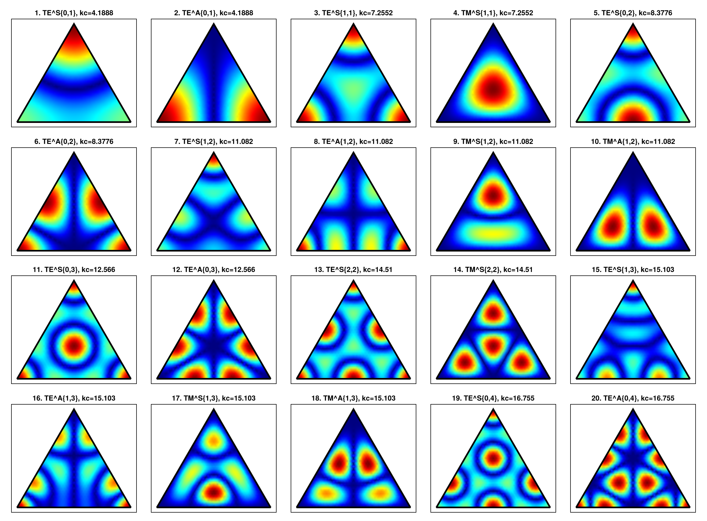
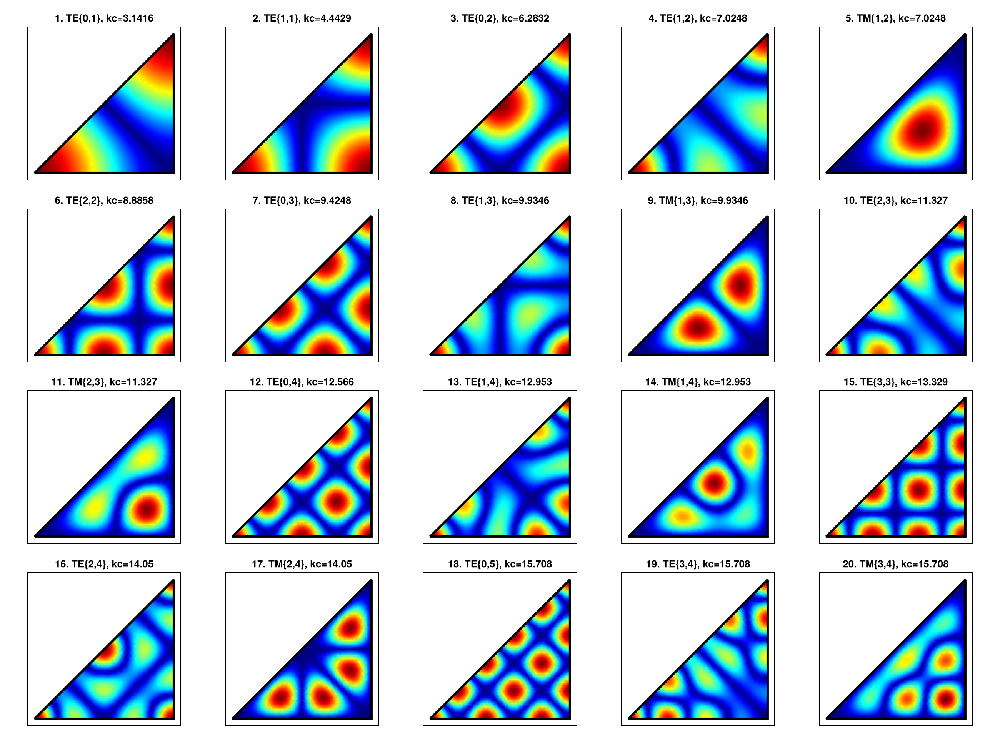
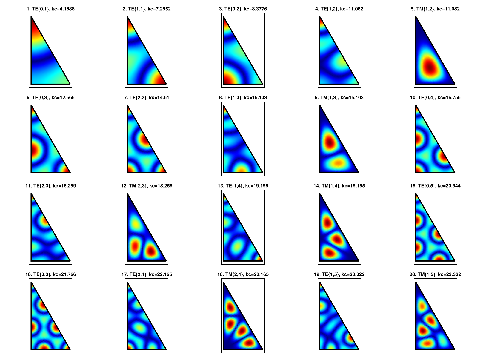

Triangular Waveguides
Triangular waveguides are less common than rectangular or circular guides because a general triangle does not lead to a separable Helmholtz problem. Analytic solutions are only available for a small set of highly symmetric triangles:
- equilateral triangles,
- right isosceles triangles,
- half-equilateral triangles, also known as 30-60-90 triangles.
These domains are implemented as reflection modes. The field API follows the same convention used by the rectangular and circular waveguides: each geometry provides cutoff functions and TE/TM field functions evaluated at points of the reference cross-section.
Reference Geometries
The triangular modes are defined on fixed reference domains. The side length is the only geometric parameter and is passed directly to the cutoff, modal, field, and normalization functions.
The equilateral triangle has vertices (0, 0), (side, 0), and (side / 2, sqrt(3) * side / 2). The right isosceles triangle has vertices (0, 0), (side, 0), and (side, side), i.e. the half of the square 0 <= y <= x <= side. The half-equilateral triangle has vertices (0, 0), (side / 2, 0), and (0, sqrt(3) * side / 2), i.e. the domain 0 <= x <= side / 2 and 0 <= y <= sqrt(3) * (side / 2 - x).
Some index pairs produce zero or duplicate modes. In particular, right-isosceles TM modes with m == n vanish identically.
For the equilateral triangle, the generic orientation subspace is already represented by the :S and :A families. The permuted pair (n, m) is not listed separately because it gives the same scalar mode up to sign.
Cutoff Wavenumbers
For the equilateral and half-equilateral cases, the cutoff wavenumber is
\[k_c = \frac{4\pi}{3a}\sqrt{m^2 + mn + n^2}.\]
For the right isosceles triangle, the modes are inherited from a square and
\[k_c = \frac{\pi}{a}\sqrt{m^2 + n^2}.\]
The cutoff functions follow the naming convention used by the other waveguide families:
kc_equilateral(side, m, n)
kc_right_isosceles(side, m, n)
kc_half_equilateral(side, m, n)The first modes ordered by cutoff wavenumber can be obtained with:
first_n_modes_equilateral(N, side)
first_n_modes_right_isosceles(N, side)
first_n_modes_half_equilateral(N, side)The equilateral function returns tuples (kind, m, n, symmetry, kc). The right isosceles and half-equilateral functions return (kind, m, n, kc).
Field Evaluation
The TE and TM fields are evaluated with the same argument order used elsewhere in the package: coordinates, geometry parameters, mode indices, frequency, and material parameters.
freq = 10.0e9
side = 1.0
fields_te = te_equilateral_fields(x, y, side, m, n, freq, 1.0, 1.0)
fields_tm = tm_equilateral_fields(x, y, side, m, n, freq, 1.0, 1.0)
fields_te = te_right_isosceles_fields(x, y, side, m, n, freq, 1.0, 1.0)
fields_tm = tm_right_isosceles_fields(x, y, side, m, n, freq, 1.0, 1.0)
fields_te = te_half_equilateral_fields(x, y, side, m, n, freq, 1.0, 1.0)
fields_tm = tm_half_equilateral_fields(x, y, side, m, n, freq, 1.0, 1.0)Each call returns (Ex, Ey, Ez, Hx, Hy, Hz). For TE modes the longitudinal scalar is Hz; for TM modes it is Ez, as in the rectangular waveguide API.
Power Normalization
Triangular modes provide the same unit-power normalization convention used by the other waveguide families. The normalization functions return the amplitude factor that scales the unnormalized fields to one watt of transmitted power.
kc = kc_equilateral(side, m, n)
β = phase_constant(kc, freq, 1.0, 1.0)
Nte = te_normalization_equilateral(side, m, n, :S, kc, β, freq, 1.0, 1.0)
Ntm = tm_normalization_equilateral(side, m, n, :S, kc, β, freq, 1.0, 1.0)
Nte = te_normalization_right_isosceles(side, m, n, kc, β, freq, 1.0, 1.0)
Ntm = tm_normalization_right_isosceles(side, m, n, kc, β, freq, 1.0, 1.0)
Nte = te_normalization_half_equilateral(side, m, n, kc, β, freq, 1.0, 1.0)
Ntm = tm_normalization_half_equilateral(side, m, n, kc, β, freq, 1.0, 1.0)Internally, the power is computed from the transverse Poynting flux using the closed-form scalar norms of the reflected triangular modes.
For equilateral triangles, the lower-level modal functions accept an optional symmetry argument. The values :S and :A select the symmetric and antisymmetric families with respect to the reference median. The right isosceles and half-equilateral field functions select the appropriate symmetry internally.
Analytical Results
The following galleries show the magnitude of the longitudinal scalar component for the first distinct modes ordered by cutoff wavenumber. Repeated scalar patterns are omitted. For TE modes this is Hz; for TM modes this is Ez.
Equilateral Triangle

Right Isosceles Triangle

Half-Equilateral Triangle

Reflection Construction
The triangular solutions are not a new separable coordinate system. They are obtained by reflecting the triangle across its sides. For the three supported geometries, repeated reflections tile the plane periodically, so the scalar Helmholtz solution can be written as a finite combination of plane waves.
The equilateral triangle is the fundamental case: its modes live on a triangular lattice and lead to the cutoff expression involving m^2 + mn + n^2. The right isosceles triangle is obtained from a square by taking symmetric or antisymmetric combinations across the diagonal. The half-equilateral triangle is obtained by restricting equilateral modes to one half of the domain. For the current API, TE half-equilateral modes are obtained from symmetric equilateral modes, while TM half-equilateral modes are obtained from antisymmetric equilateral modes.
This reflection construction is also the reason why a generic triangular waveguide is not included: an arbitrary triangle does not generate a periodic tessellation with a finite analytic mode basis.